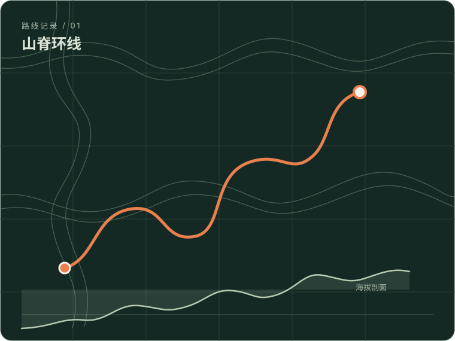
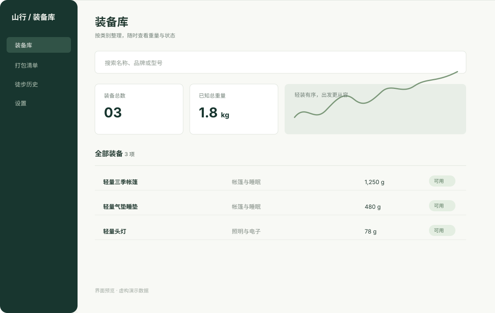
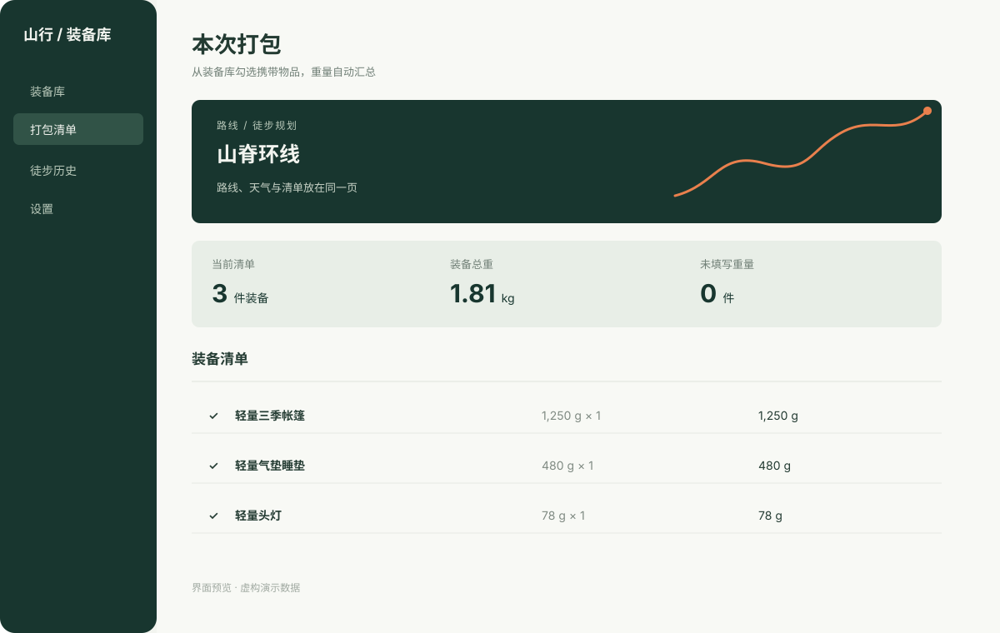
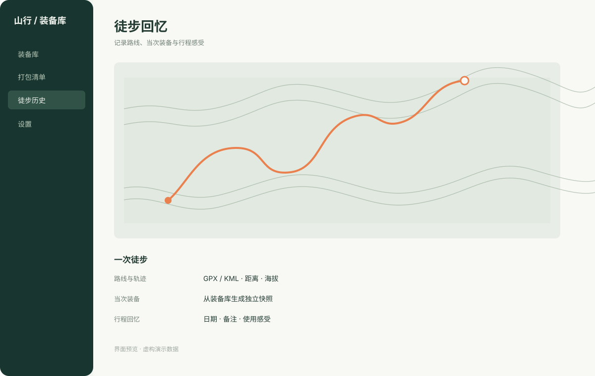

装备档案01 / GEAR
把装备资料，
整理成自己的库。
记录名称、品牌型号、分类、数量、重量、价格、状态、标签与备注；管理照片、附件和组合装备，也可用可选工具整理产品照。
- 分类浏览、搜索与概览统计
- 收藏常用装备，维护库存与状态
- 多用户本机资料库，可在清单中借用他人装备
MACOS 原生 · 本机优先 · 开放源码
管理装备，核对负重，安排路线与路餐；回来后，把走过的路和当时带的装备一起记下来。

整理 · 计划 · 记录 / 让每次出发都有迹可循
功能全览 WHAT’S INSIDE
装备档案、出发清单和徒步历史彼此衔接。点开每项可直接查看对应源码。
记录名称、品牌型号、分类、数量、重量、价格、状态、标签与备注；管理照片、附件和组合装备，也可用可选工具整理产品照。
从装备库选择物品并填写携带数量，查看已知重量、装备价值与未补全项目；损坏装备不会加入清单。
导入 GPX / KML，或按地名和路线名称搜索。预览地图、距离与海拔；可组合多段路线，并查看出发时段天气、逐日预报和远期趋势。
按天数、餐次和人数安排食物，记录份数、包装重量、热量、价格与准备方式；汇总每日能量、总重量、预算和出发携水量。
从当前打包清单生成记录，或手动补录日期、路线、游记、天气与感受。轨迹、当次装备快照和实际数量各自留在这次历史里。
Excel 导入支持预览与字段匹配；CSV / TSV 可导入，CSV 可导出。当前用户的完整备份包含资料、清单、照片和附件，恢复时按编号合并。



所有示意图均为虚构内容，不含任何个人装备数据、照片或行程记录。
数据与许可 LOCAL BY DEFAULT
装备档案、照片、附件、备份和徒步记录默认保存在 Mac。本公开仓库只有空白初始化模板与公开路线目录，不包含个人清单、照片、历史记录或备份。
应用源码使用 GNU AGPL-3.0；路线数据库按其元数据另行标注 ODbL-1.0。路线与天气联网功能会访问相应服务，详情和来源均可查阅。
继续了解 OPEN PROJECT
目前公开的是源码和 Xcode 工程，可按仓库说明在 Mac 上构建。
macOS 13+ · Xcode 15+ · SwiftUI · GNU AGPL-3.0